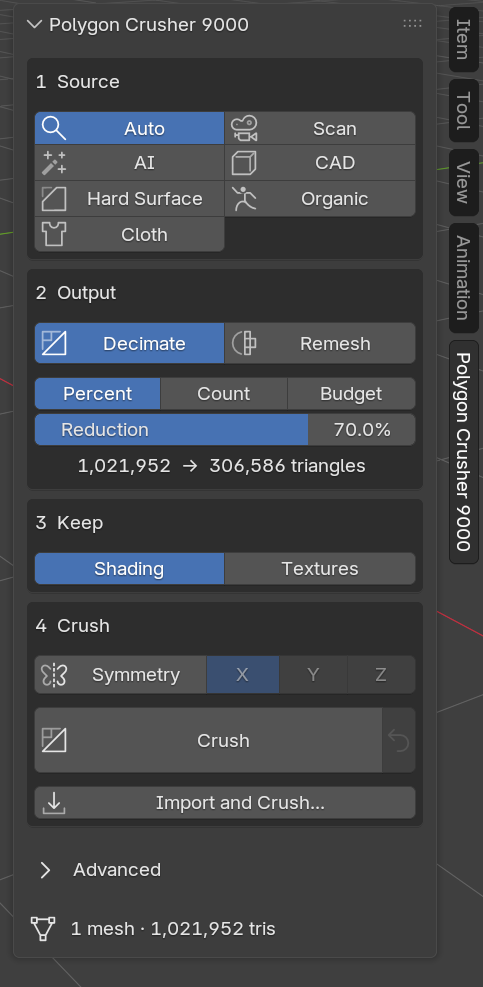
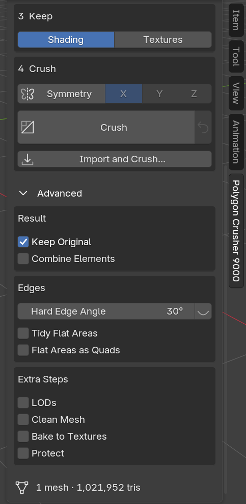

Settings Reference
All settings are in the Polygon Crusher 9000 tab of the 3D Viewport sidebar (press N). The panel goes top to bottom in four steps, then a collapsed Advanced section holds the rest.
Settings that do not apply to the chosen source or tool are hidden, not greyed out, so the panel only shows what the next run will use.

Status line
At the very bottom of the tab, the Selection line says what is selected: the number of meshes and their triangle total. With nothing selected it says "Select a mesh object to start".
1 Source
Seven buttons — default Auto
What kind of model this is: Auto, Scan, AI, CAD, Hard Surface, Organic, Cloth. Picking one uses the method for that kind and sets a starting amount. With Auto, a line under the buttons says Last run treated it as: ... after a run. See Source Types.
2 Output
Decimate / Remesh
Two tabs — default Decimate
- Decimate reduces the triangles and keeps the shape, shading and textures.
- Remesh rebuilds the model as clean, even quads. See Remesh (Quads).
Percent, Count, Budget
Three buttons — default Percent
- Percent — remove a share of the triangles.
- Count — each selected object is crushed to a count.
- Budget — one total for the whole selection.
See Target Modes. The control below the buttons changes with the choice:
- Reduction (Percent): 1% to 99%, default 50% (the source sets a starting value). Dragging covers 5% to 95%.
- Target Triangles (Count): minimum 4, default 5000. An object with fewer triangles than this is left at its own count.
- Total Triangles (Budget): minimum 4, default 100,000.
The result never has fewer than 4 triangles.
Under the control, a readout shows before → after triangles (or tris →
quads for Remesh), added up over the selected meshes. The "after" number is
the target, not a promise. See Limits.
3 Keep
Shading
Toggle — default on
The result takes the original's smooth shading, so it does not look faceted, even when the topology changes a lot. Leave it on for almost all cases.
Textures
Toggle — default off
Keeps the UV layout and materials so textures still fit the result. UV seams are held in place, and the crush refuses collapses that would fold the texture mapping. It does nothing if the mesh has no UVs.
Sharps
Toggle — default on; shows for Hard Surface and CAD only
Hard edges stay in place and crisp, including small-bevel corners. See Hard Surface and Sharps.
Shape only
With Shading and Textures both off, you get the shape only: a closed mesh ready to 3D print. The panel says so.
Rebuild Surface (Remesh only)
Checkbox — default off
For hopeless input (triangle soups, open or self-crossing models). Rebuilds a closed skin first, then remeshes it. See Remesh (Quads).
Remesh status
After a Remesh, a box under the Keep row says what the run did: the real quad count, the share of quads and any notes.
4 Crush
Symmetry
Toggle + X / Y / Z — default off, axis X
Keeps a mirrored model mirrored: both halves are treated the same way and the center line stays straight and closed. The axis is the object's own X, Y or Z through its origin, like Blender's Mirror modifier. If the object has an active Mirror modifier, its axis is used instead and the axis buttons are greyed out. With Remesh, one half is remeshed and mirrored. Not used by Budget or Import and Crush.
Crush
The main button. It does the job of the tab you chose (Crush LODs while LODs is on). It is available when at least one mesh is selected.
While it works, the button becomes Cancel with a progress bar. Click Cancel or press ESC to stop.
Revert
The small icon next to Crush. Deletes the selected result and brings back its original. Greyed out when there is nothing to revert. See Keep Original and Revert.
Import and Crush...
Button (Decimate only)
Opens a file browser for an .obj, .ply or .stl file. See Import and Crush. Also in File → Import.
Keep Original warning
When Keep Original is off, a red line under the button says so: "Original will be deleted" (Decimate) or "Keep Original is off: Revert won't work" (Remesh).
When the native binary is missing, the panel shows "Native binary not found" and Crush refuses to run. See Troubleshooting.
Advanced
Click Advanced to open it. It starts collapsed in every session. It has four boxes.

Result
- Keep Original (default on) — the original is hidden instead of deleted. Greyed out while LODs is on. See Keep Original and Revert.
- Combine Elements (default off) — joins all the selected meshes into one, welds the parts that touch or overlap, and crushes the result once into a single object.
Edges
- Hard Edge Angle (default 30°) with the eye button — the eye is Show Hard Edges. Hidden for Organic, Scan and Cloth sources. See Show Hard Edges.
- Tidy Flat Areas (Decimate only; Auto, CAD, Hard Surface) — flips long thin triangles on flat areas into even ones. No point moves.
- Flat Areas as Quads (Decimate only; Auto, CAD, Hard Surface) — merges the triangles of each flat area into one face and pairs the rest into quads. Leave it off for game exports that need triangles.
Extra Steps
Each one opens its options right under it while ticked.
- LODs (Decimate only) — Levels (1 to 8, default 3) and Ratio (5% to 95%, default 50%). See LODs.
- Clean Mesh (Decimate only) — Small Pieces (0% to 5%, default 0.1%), and the Scan Repair switches: Cut Floor (with Height or the Pick Floor eyedropper), Remove Spikes, Fill Holes (with Size, 0.1% to 50%, default 5%). The repair switches show for Auto, Scan and AI. See Clean Mesh and Scan Repair.
- Bake to Textures — Normal Map, Base Color, Undo Bake, Bake Into Kept UVs (Remesh with Textures on), Size (512, 1K, 2K, 4K, default 2K), Normal Y (OpenGL or DirectX), Save To (Blend File Folder or Custom Folder). See Bake Maps and Auto UVs.
- Quad Density (Remesh only) — More Detail, Less Detail, Done Painting, Strength (1 to 8, default 3). See Quad Density.
- Protect (Decimate only) — Paint Protect, Done Painting, Add and Remove (Edit Mode), a vertex group field, Strength (0% to 100%, default 50%), Blur (0% to 100%, default 5%) and Show Heatmap. See Protect Areas.
Last Crush
Shown after a Decimate, for the active crushed object:
- Object — the crushed object's name.
- Triangles — before → after.
- Total time and Passes.
Click Details for the time of each phase (Extract, Write, Crush, Read, Build, Bake Normals). "Bake Normals" here is the shading transfer, not the normal map bake. When several objects are selected they run at the same time, so the phase times can add up to more than the clock time. The numbers are only kept for the current Blender session.
Remembered settings
The amount, Hard Edge Angle, LOD and bake size settings are remembered across files and Blender restarts for new scenes. A file that already has Polygon Crusher settings keeps its own.